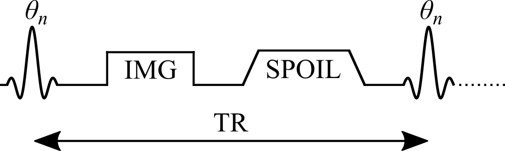
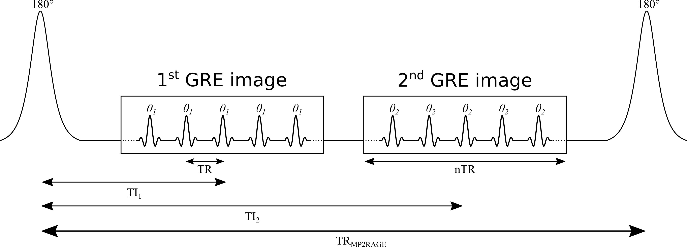

Slides from the qMRLab mOOC chapter by Mathieu Boudreau NeuroPoly Lab, Polytechnique Montréal
Why map T1?
T1, the spin–lattice relaxation time: the rate at which excited spins return to equilibrium with their surroundings
A quantitative biomarker
Needed to optimize protocols, e.g. the Ernst angle for maximum SNR in spoiled gradient echo (Ernst 1966)
A correction factor for other qMRI techniques: quantitative MT (Cercignani 2005; Yarnykh 2002) and DCE (Li 2018; Sung 2013)
Three approaches in this chapter
Inversion recovery
Samples the recovery of Mz after an inversion pulse.
Gold standard, but needs TR of 2–5 T1, so whole-organ maps are hard in clinical times.
Variable flip angle
Several spoiled gradient echo images with different flip angles.
Rapid 3D, but sensitive to flip-angle errors, so it needs a B1 map.
MP2RAGE
Dictionary-based; combines elements of IR and VFA.
Turnkey and increasingly available on clinical scanners.
Method 1 · Inversion recovery
Inversion Recovery T1 Mapping
Widely considered the gold standard for T1 mapping
The inversion recovery experiment
A 180° RF pulse inverts the magnetization at thermal equilibrium
Mz recovers through spin–lattice relaxation for a set delay, the inversion time (TI)
A 90° excitation, then a readout (spin echo or gradient echo), takes a snapshot of Mz at that TI
Repeat for several TIs, then fit the recovery curve to estimate T1
Where it comes from
First developed for NMR in the 1940s(Hahn 1949; Drain 1949)
The first T1map used saturation recovery: a 90° preparation pulse instead of 180° (Pykett 1978)
Strengths, and the catch
Strengths
Large dynamic range of signal change
Insensitive to pulse sequence parameter imperfections (Stikov 2015)
The catch
Conventional implementations need TR on the order of 2 to 5 T1(Steen 1994)
Whole-organ T1 maps are hard to get in a clinically feasible time
So IR is scarcely used in practice, but it is the reference measurement for developing and comparing T1 methods. Several variations make it practical for some applications (Messroghli 2004; Piechnik 2010).
Pulse sequence
Figure 2.1. Pulse sequence of an inversion recovery experiment.
Signal modelling: the general equation
Steady-state Mz from the Bloch equations for {θ180 – TI – θ90 – (TR − TI)}:
Simple in both equation and experiment: the most widely used IR signal model
Many implementations acquire magnitude-only images, so the measured signal is proportional to |Eq. 2.3|
Inversion recovery curves for brain tissues
When the approximation breaks down
In practice, Eq. 2.1 is the better choice for simulating an IR experiment:
TR is chosen to exceed 5 T1 of the tissue of interest, which is rarely the longest T1 present: long enough for white matter, but not for CSF
Eq. 2.3 also assumes ideal inversion pulses, rarely the case because of slice profile effects
Next: magnitude signal for TR = 5 s and T1 from 250 ms to 5 s, computed with both equations.
General equation vs long-TR approximation
Drag the slider to change T1.
Data fitting: what to watch for
Magnitude-only images: polarity inversion restores the exponential form, but it is sensitive to noise: Rician noise gives a non-zero level at the signal null
Phase data available: a phase term must be added to the fitting equation (Barral 2010)
Eq. 2.3 must only be used for long-TR data (TR > 5 T1), which in practice is rarely true for every tissue
Fitting algorithms
Early methods, built for the computers of the time
Null method: each T1 has a unique zero crossing (Pykett 1983)
Linear fit of a rearranged Eq. 2.3 on a semi-log plot (Fukushima 1981)
Today
Non-linear least squares, e.g. Levenberg–Marquardt, on the approximate (Eq. 2.3) or general (Eq. 2.1) model
Reduced-dimension NLS (RD-NLS)
Fits Eq. 2.1 up to 75× faster than Levenberg–Marquardt, without a precision penalty(Barral 2010)
A simplified 5-parameter model is sufficient for accurate T1 mapping:
$$S(TI) = a + b\,e^{- \frac{TI}{T_1}}\qquad\text{(2.4)}$$
a and b are complex; for magnitude-only data, a 3-parameter fit of |Eq. 2.4| can be sufficient
General: no assumption about TR, so as robust as Eq. 2.1 when every parameter except TI is kept constant
Open-source code released with the paper, and available as a qMRLab T1 model
RD-NLS vs the long-TR model
Drag the slider to change TR.
Example: brain dataset and T1 map
Use the buttons to switch inversion time.
Why it is the gold standard
A typical protocol uses a long TR and enough inversion times for a stable fit (typically 5 or more), covering [0, TR]
A wide dynamic range, up to [−kM0, kM0]: many TIs with high SNR along the recovery curve (Fukushima 1981)
Largely insensitive to flip-angle inaccuracies and imperfect spoiling(Stikov 2015): only TI changes, and a single acquisition is made per TR
Protocol design
Avoid inversion times that null the signal of the tissue of interest: those magnitude images are dominated by Rician noise, which can hurt the fit at low SNR
Runs on standard pulse sequences available on most scanners, using a customized protocol
Needs no extra calibration measurements
Example: the interactive preprint of the ISMRM Reproducible Research Study Group 2020 challenge on IR T1 mapping (Boudreau 2023).
Noise at the null point: Monte Carlo simulations
Drag the slider to change TR.
The main drawback: time
Long TRs are needed: a few T1 for general models (Eqs. 2.1, 2.4), up to 5 T1 for the long-TR model (Eq. 2.3)
One TI per TR (2–5 s) and one phase-encode line per excitation (~100–200 lines): 10–25 minutes for a single-slice T1 map
So whole-organ maps are hard to get in clinically feasible times
Still useful as a reference measurement, or for a single-slice T1 estimate used to optimize other pulse sequences.
Faster variants: Look-Locker
After the inversion, a periodic train of small pulses θ samples the recovery (Look 1970):
Samples the inversion recovery curve much more efficiently, at the cost of lower SNR
Each TI depends on the previous θ pulses, so it is more sensitive to B1 inhomogeneity and imperfect spoiling(Gai 2013; Stikov 2015)
Widely used for rapid T1 mapping; MOLLI and ShMOLLI for cardiac T1 mapping (Messroghli 2004; Piechnik 2010)
Saturation recovery
The inversion pulse is replaced with a saturation pulse: θ90 – TI – θ90; used for the very first T1 map (Pykett 1978)
No long TR needed: every θ90 resets Mz to the same initial state
But:
TIs still need to reach the order of T1
The dynamic range is halved: [0, M0]
The shortest TIs, the fastest to acquire, have the lowest SNR
Method 2 · Variable flip angle
Variable Flip Angle T1 Mapping
Also known as DESPOT1: rapid quantitative T1, widely used to acquire 3D (e.g. whole-brain) maps in a clinically feasible time
The idea
Acquire several spoiled gradient echo images, each with a different excitation flip angle θn (θi ≠ θj)
Very short TRs, on the order of 10 ms
The steady-state signal is very sensitive to T1 over a wide range of flip angles
Origins and strengths
Originates from NMR: adopted for its time efficiency and its ability to measure accurate T1 values simultaneously over a wide range (Christensen 1974; Gupta 1977)
For imaging, VFA can use a 3D acquisition instead of multislice:
higher SNR
reduced slice profile effects
The catch: flip angle accuracy
The signal is very sensitive to inaccuracies in the flip angle
The nominal flip angle (set at the scanner) differs from the actual one experienced by the spins: up to ±30 % at 3.0 T, increasing with field strength
VFA typically needs another quantitative map, the transmit RF amplitude B1+ (B1), to calibrate the flip angle (Sled 1998)
The extra B1 map reduces the time savings, and its errors propagate into the T1 map (Boudreau 2017; Lee 2017)
Pulse sequence

Figure 2.7. Simplified VFA pulse sequence with a gradient echo readout. TR: repetition time; θn: excitation flip angle of the nth measurement; IMG: image acquisition (k-space readout); SPOIL: spoiler gradient.
Signal modelling
Steady-state Mz of an ideal VFA experiment, solved analytically from the Bloch equations for the spoiled gradient echo sequence {θn – TR}:
The longitudinal magnetization has reached a steady state after a large number of TRs
The transverse magnetization is perfectly spoiled at the end of each TR
These may not hold if care is not taken. Bloch simulations, which solve the Bloch equations numerically for a set of spins at each time point, give a more realistic estimate when a steady state is not reached.
Approach to steady state: Bloch simulations
Drag the slider to change the number of TRs. Flip angles near the Ernst angle need more TRs to reach a steady state.
Spoiling
Sufficient spoiling is likely the most challenging parameter to control in a VFA experiment
A combination of gradient spoiling and RF phase spoiling is typically recommended (Handbook 2004; Zur 1991)
RF phase increment after each TR: \(\Phi_{n}=\Phi_{n-1}+n\Phi_{0}\), with \(\Phi_0 = 117°\) (Zur 1991)
Very strong gradients introduce diffusion effects that further improve spoiling (Yarnykh 2010)
Ideal vs gradient & RF vs no spoiling
Drag the slider to change the number of TRs.
Data fitting: linearizing the signal
Non-linear least squares on Eq. 2.5 (two free variables: T1 and M0) is valid, but rarely done in practice
A simple refactoring of Eq. 2.5, without any approximation, gives the form y = mx + b(Gupta 1977):
$$\frac{S_n}{\sin(\theta_n)} = e^{- \frac{TR}{T_1}} \frac{S_n}{\tan(\theta_n)} + C \left(1-e^{- \frac{TR}{T_1}}\right)\qquad\text{(2.7)}$$
The last term is the same for every θn, so it can be grouped into the constant:
With only two flip angles, a very common protocol, the slope is simply the elementary slope between the two points
Next: both forms of the signal (Eq. 2.5 and Eq. 2.8) for a noisy dataset.
Nonlinear and linear forms, with noise
Protocol design: which flip angles?
Most VFA experiments use the minimum number of flip angles, two, to minimize acquisition time
For a single T1, the best precision comes from the two flip angles that give 71 % of the maximum signal (at the Ernst angle) (Deoni 2003; Schabel 2008)
Time allowing, extra flip angles are acquired at higher values and in between, where differences between tissue T1 values are larger
With more than two angles, the points no longer share the same noise weighting, which may bias linear fits at low SNR: use non-linear least squares or a weighted linear fit (Chang 2008)
Correcting the flip angle with a B1 map
The excitation RF field (B1+) of a loaded coil varies in space, unless RF shimming is available, which is not common at clinical field strengths (Sled 1998)
Correct the flip angle voxelwise with a B1 map acquired in the same session:
B1 is normalized: unitless, and equal to 1 where the RF field has the expected amplitude
Next: fitted T1 from Monte Carlo data simulated with biased flip angles, fitted without and with B1 correction.
Fitted T1 vs B1: without and with correction
Example: VFA dataset, B1 map and T1 map
Use the buttons to switch between the two flip angles and the B1 map.
Pitfalls
Accuracy is very sensitive to the pulse sequence implementation, so VFA is less robust than inversion recovery (Baudrexel 2017; Lutti 2013; Stikov 2015)
Insufficient spoiling can bias T1 by up to 30 % relative to inversion recovery (Stikov 2015)
Accuracy and precision depend strongly on the quality of the B1 map(Lee 2017), which varies between implementations (Boudreau 2017)
Omitting B1 correction is not recommended: most scanners have default sequences that, with careful settings, give B1 maps of sufficient quality very rapidly (Boudreau 2017; Samson 2006; Wang 2005)
Why VFA is still widely used
One of the most widely used T1 mapping methods in research
Rapid acquisition and rapid image processing
Widespread availability
A great candidate for other quantitative protocols: quantitative MT(Cercignani 2005; Yarnykh 2002) and DCE(Li 2018; Sung 2013)
Growing in popularity: available on clinical scanners, rapid scan times, fast post-processing
They use numerical dictionaries: databases of pre-calculated signal values simulated for a wide range of tissue and protocol combinations
Examples for T1: MR Fingerprinting (Ma 2013), some compressed sensing methods (Doneva 2010; Li 2012), and MP2RAGE(Marques 2010)
Two categories:
dictionaries that exploit redundancy in parametric data to accelerate imaging (CS, MRF)
dictionaries that estimate quantitative maps from the reconstructed images (MP2RAGE)
MP2RAGE: a hybrid of IR and VFA
An extension of the conventional MPRAGE sequence widely used in clinical studies (Haase 1989; Mugler 1990)
A 180° inversion pulse prepares the magnetization for T1 sensitivity at the start of each TRMP2RAGE
Then two images at two inversion times, using gradient echo (GRE) blocks with low flip angles and short TRs
Encoding, and why two images
Within a GRE block, each excitation is followed by a constant in-plane ("y") phase encode, varied for each TRMP2RAGE, and a different 3D ("z") phase encode, varied at each TR
The centre of k-space in the 3D direction is acquired at each block's TI
Motivation: an MPRAGE-like image with self-bias correction of B0 and B1−, and a first-order correction of B1+
Because two TIs are acquired (MPRAGE acquires one), T1 can be inferred, giving quantitative T1 maps
Pulse sequence

Figure 2.13. TR: time between GRE readouts; TRMP2RAGE: time between adiabatic 180° inversions; TI1, TI2: inversion times; θ1, θ2: excitation flip angles.
The MP2RAGE signal
For complex data (magnitude and phase, or real and imaginary), SMP2RAGE combines the images at the two TIs (Marques 2010):
MP2RAGE is a hybrid of IR and VFA, so its signal equations are more complex
A steady state is not reached during the short GRE train: the signal at the centre of k-space, which defines the contrast, depends on the number of phase-encoding steps
The equations that follow assume the 3D phase-encoding dimension is fully sampled: no partial Fourier or parallel imaging
Can be reduced by careful protocol design (Marques 2010), but not entirely eliminated (Marques 2013)
Data fitting with a dictionary
No conventional minimization (e.g. Levenberg–Marquardt): MP2RAGE uses pre-calculated signal values over a wide range of T1, then interpolates to find the T1 that matches the observed signal
Dictionaries can be generated before scanning, and interpolating is much faster than most fitting algorithms, so maps can be shown directly on the scanner console
Signal curves must be unique for each parameter value: SMP2RAGE is unique for each T1 for a given protocol, so a [T1, SMP2RAGE] dictionary is enough (Marques 2010)
B1 sensitivity is reduced with protocol optimization, and further by adding B1 as a dictionary dimension [T1, B1, SMP2RAGE], at the cost of an extra B1 map (Marques 2013)
T1 lookup table
Hover to read T1 for each SMP2RAGE and B1.
Example: 7T MP2RAGE dataset and T1 map
Use the buttons to switch between the two inversion images and SMP2RAGE.
Software
MP2RAGE is increasingly distributed by MRI vendors, typically with a fitting package that reconstructs T1 maps online
Several open-source packages are also available (Marques 2017; de Hollander 2017)
For new users these are recommended over programming one from scratch: there are many potential pitfalls, e.g. adjusting the equations for partial Fourier or parallel imaging
Benefits
Widespread availability and turnkey acquisition and fitting: a main reason for growing interest in quantitative T1 in clinical and neuroscience studies
Highly reproducible brain T1 in an inter- and intra-site study at eight sites (same hardware and software, 7T) (Voelker 2016)
Among the fastest acquisition and post-processing times of quantitative T1 methods
Very high resolution: 1 mm isotropic at 3T and submillimeter at 7T, both in under 10 min (Fujimoto 2014), opening the door to cortical studies (Waehnert 2014; Beck 2018; Haast 2018)
Pitfalls
Reproducibility depends on using one pre-calculated dictionary: different dictionaries (e.g. across sites and vendors) give minor differences in T1 for the same data
Residual B1 sensitivity can be large enough to need correction with a measured B1 map (Marques 2013; Haast 2018), but B1 mapping brings its own errors: choose the method and post-processing (e.g. filtering) carefully (Boudreau 2017)
The equations, and so the dictionaries, assume monoexponential longitudinal relaxation: suboptimal estimates of the long T1 component under a biexponential model (Rioux 2016), more important at higher fields
Summary
Inversion recovery
Gold standard: wide dynamic range, insensitive to flip angle and spoiling errors.
Long TR: 10–25 min per slice. Used as a reference.
Variable flip angle
Rapid 3D acquisition and processing; widely available.
Sensitive to spoiling (up to 30 % bias) and needs a good B1 map.
MP2RAGE
Turnkey, fast, high resolution and reproducible.
Depends on its dictionary; residual B1+ sensitivity.
Exercises and discussion
The chapter ends with nine exercises that use the interactive figures, the notebooks (on Binder) and qMRLab